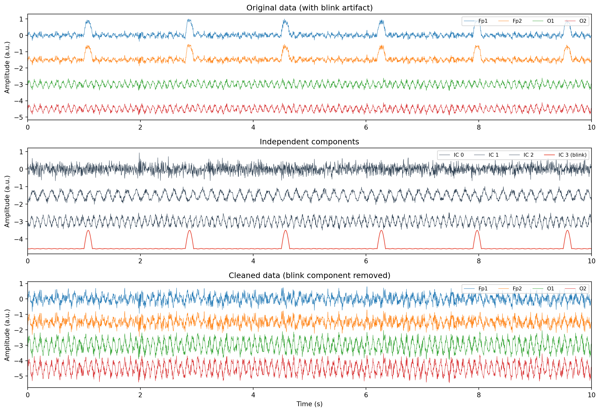

import mne
from mne.preprocessing import ICA
# Create the ICA object
ica = ICA(
n_components=20, # number of components to extract
method="infomax", # ICA algorithm
fit_params=dict(extended=True), # use extended infomax
random_state=42, # for reproducibility
max_iter=500 # maximum iterations for convergence
)ICA in MNE-Python
artifacts
decomposition
mne
A practical guide to MNE’s ICA class: fitting ICA, choosing n_components, selecting algorithms (FastICA, Infomax, Picard), plotting and inspecting components, excluding artifacts, applying corrections, and saving solutions.
From theory to practice
The ICA theory page explains what ICA does and why it works. This page is about the mechanics: how to run ICA in MNE-Python, inspect the results, decide which components to remove, and apply the correction to your data. Think of this as the hands-on companion to the conceptual page.
MNE wraps everything into the mne.preprocessing.ICA class. You create an ICA object, fit it to your data, inspect and label artifact components, and then apply the correction. The class keeps track of the unmixing matrix, component topographies, and your exclusion decisions, so you can save and reload the full solution later.
Creating the ICA object
The first step is to create an ICA instance and set a few parameters.
Choosing n_components
The n_components parameter controls how many independent components ICA extracts. You have three main options:
n_components = None(default): uses the number of channels. This gives ICA maximum freedom to separate sources. It is the right choice when your data has full rank.n_components = n(an integer): extracts exactlyncomponents. Useful if your data rank is reduced (for example, after average re-referencing or removing bad channels). You can check the data rank withmne.compute_rank(raw).n_components = 0.99(a float between 0 and 1): retains enough PCA components to explain that fraction of the variance. This is a convenient way to let MNE figure out the right number automatically.
A practical rule: check the data rank first, and set n_components to match it.
# Check the data rank
rank = mne.compute_rank(raw, rank="info")
print(f"Data rank: {rank}")
# Set n_components to match the rank
n_comp = list(rank.values())[0]
ica = ICA(n_components=int(n_comp), method="infomax",
fit_params=dict(extended=True), random_state=42)Algorithm options
MNE supports three ICA algorithms. Each finds independent components through a different mathematical strategy, but in practice they all produce similar results for typical EEG data.
| Algorithm | method= |
Speed | Stability | Notes |
|---|---|---|---|---|
| FastICA | "fastica" |
Fast | Moderate | Default in MNE. Can vary between runs. |
| Infomax | "infomax" |
Moderate | High | Gold standard for EEG. Use extended=True. |
| Picard | "picard" |
Fast | High | Requires python-picard package. Combines speed and stability. |
For research analysis, extended Infomax is the safest choice. It handles both sub-Gaussian and super-Gaussian sources (which matters because blink artifacts have a super-Gaussian distribution while muscle artifacts tend to be sub-Gaussian). FastICA is fine for quick exploration or teaching.
Picard is a newer option that converges faster than Infomax while maintaining comparable stability. If you install the python-picard package (pip install python-picard), you can use it by setting method="picard".
# FastICA (default, fast but less stable)
ica_fast = ICA(n_components=20, method="fastica", random_state=42)
# Extended Infomax (recommended for EEG)
ica_infomax = ICA(n_components=20, method="infomax",
fit_params=dict(extended=True), random_state=42)
# Picard (fast and stable, needs python-picard)
ica_picard = ICA(n_components=20, method="picard", random_state=42)Fitting ICA
Once you have created the ICA object, you fit it to your data using ica.fit(). ICA learns the unmixing matrix from the data, so the quality of the fit depends on the data you give it.
# Fit ICA on the raw data
ica.fit(raw)
# You can also fit on epochs
# ica.fit(epochs)Filtering before fitting
ICA works best on data that has been high-pass filtered at 1 Hz or higher. Slow drifts (below 1 Hz) violate the stationarity assumption and can produce unreliable decompositions. If your main analysis requires a lower high-pass cutoff (say, 0.1 Hz), create a copy of your data filtered at 1 Hz just for fitting ICA, then apply the ICA solution to the original data.
# Filter a copy at 1 Hz for ICA fitting
raw_for_ica = raw.copy().filter(l_freq=1.0, h_freq=None)
# Fit ICA on the filtered copy
ica.fit(raw_for_ica)
# Apply the solution to the original (less aggressively filtered) data
ica.apply(raw) # modifies raw in-placeExcluding bad segments
If your data contains annotations starting with “BAD” (from visual inspection or automated rejection), ICA will skip those segments during fitting. This is the intended behaviour: you do not want ICA to learn from corrupted data.
# ICA automatically excludes BAD-annotated segments
print(f"Annotations: {raw.annotations}")
ica.fit(raw) # BAD segments are skippedPlotting and inspecting components
After fitting, you need to inspect the components to decide which ones are artifacts. MNE provides several plotting methods for this.
Component topographies
ica.plot_components() shows the scalp topography of each component. This is usually the first thing you look at, because the spatial pattern is the most reliable indicator of what a component represents.
# Plot topographies of all components
ica.plot_components()
# Plot only the first 10 components
ica.plot_components(picks=range(10))Blink components have a strong frontal pattern (concentrated at Fp1/Fp2). Muscle components show peripheral patterns at temporal or frontal edges. Brain components typically have smooth, focal spatial patterns.
Component time courses
ica.plot_sources() shows the time course of each component, similar to scrolling through raw data. This lets you see the temporal structure: blinks appear as intermittent sharp deflections, heartbeat components show a regular rhythm, and muscle components look like bursts of high-frequency noise.
# Plot component time courses (interactive viewer)
ica.plot_sources(raw)
# You can also plot sources for epochs
# ica.plot_sources(epochs)Detailed component properties
ica.plot_properties() shows a comprehensive view of a single component: its topography, time course, power spectrum, and epoch image (if epochs are provided). This is the most informative view for making a decision about a specific component.
# Detailed properties of component 0
ica.plot_properties(raw, picks=[0])
# Properties of multiple components
ica.plot_properties(raw, picks=[0, 1, 2])Excluding components
Once you have identified artifact components, you mark them for exclusion by adding their indices to ica.exclude.
# Mark components 0 and 3 as artifacts
ica.exclude = [0, 3]
# Or add to the existing list
ica.exclude.append(5)
print(f"Components to exclude: {ica.exclude}")You can also mark components interactively. When you click on a component in the plot_components() or plot_sources() viewer, MNE adds or removes it from ica.exclude.
Applying ICA
ica.apply() reconstructs the data without the excluded components. This is the step that actually cleans your data.
# Apply ICA correction (modifies raw in-place)
ica.apply(raw)
# To keep the original data, work on a copy
raw_clean = raw.copy()
ica.apply(raw_clean)A note about what happens under the hood: ica.apply() does not simply zero out the excluded component time courses. It projects the data into the ICA space, removes the excluded components, and projects back. This is mathematically equivalent but handles the PCA reduction step correctly.
Saving and loading ICA solutions
You can save an ICA solution to disk and reload it later. This is useful when you want to review or modify your component selections without re-fitting ICA (which takes time and, for non-deterministic algorithms, might give different results).
# Save the ICA solution (including exclude list)
ica.save("subject01-ica.fif", overwrite=True)
# Load it back
ica_loaded = mne.preprocessing.read_ica("subject01-ica.fif")
print(f"Excluded components: {ica_loaded.exclude}")
# Apply the loaded solution to data
ica_loaded.apply(raw)The saved file contains the unmixing matrix, the mixing matrix, the PCA components, and the exclude list. It does not contain the original data, so the file is small.
Working example
The code below demonstrates the full ICA workflow using simulated data. We create multi-channel data with a clear blink artifact, fit ICA using scikit-learn’s FastICA (to avoid requiring an interactive MNE session), identify the blink component by its frontal projection, remove it, and compare the data before and after correction.
import numpy as np
import matplotlib.pyplot as plt
from sklearn.decomposition import FastICA
rng = np.random.default_rng(42)
# ── Simulation parameters ──────────────────────────────────────
n_channels = 8
sfreq = 256
duration = 10
n_samples = sfreq * duration
times = np.arange(n_samples) / sfreq
channel_names = ["Fp1", "Fp2", "F3", "F4", "C3", "C4", "O1", "O2"]
# ── Create source signals ─────────────────────────────────────
# Source 1: Alpha oscillation (10 Hz, brain)
alpha = np.sin(2 * np.pi * 10 * times)
alpha += 0.3 * rng.standard_normal(n_samples)
# Source 2: Theta oscillation (6 Hz, brain)
theta = 0.7 * np.sin(2 * np.pi * 6 * times + 1.0)
theta += 0.2 * rng.standard_normal(n_samples)
# Source 3: Blink artifact (intermittent sharp peaks)
blink = np.zeros(n_samples)
for bt in [1.0, 2.8, 4.5, 6.2, 7.9, 9.5]:
idx = int(bt * sfreq)
width = int(0.15 * sfreq)
if idx + width < n_samples:
t_b = np.arange(width) / sfreq
blink[idx:idx + width] = 5 * np.sin(np.pi * t_b / (width / sfreq))
# Source 4: Background noise
noise = rng.standard_normal(n_samples)
# ── Mixing matrix (channels x sources) ────────────────────────
# Blink projects strongly to Fp1, Fp2 and weakly to posterior channels
mixing = np.array([
[0.4, 0.3, 1.0, 0.4], # Fp1
[0.4, 0.3, 0.95, 0.4], # Fp2
[0.7, 0.5, 0.3, 0.3], # F3
[0.7, 0.5, 0.25, 0.3], # F4
[0.9, 0.4, 0.05, 0.3], # C3
[0.9, 0.4, 0.05, 0.3], # C4
[1.0, 0.2, 0.02, 0.2], # O1
[1.0, 0.2, 0.02, 0.2], # O2
])
sources = np.vstack([alpha, theta, blink, noise])
data = mixing @ sources
data *= 30e-6 / data.std() # scale to realistic amplitude
# ── Fit ICA ────────────────────────────────────────────────────
ica = FastICA(n_components=4, random_state=42, max_iter=1000)
components = ica.fit_transform(data.T).T
ica_mixing = ica.mixing_
# ── Identify the blink component ──────────────────────────────
# Blink component has the largest loading on frontal channels
frontal_loading = np.abs(ica_mixing[:2, :]).mean(axis=0)
blink_ic = np.argmax(frontal_loading)
print(f"Blink component: IC {blink_ic} "
f"(frontal loading = {frontal_loading[blink_ic]:.4f})")
# ── Remove the blink component ────────────────────────────────
clean_components = components.copy()
clean_components[blink_ic] = 0
data_clean = ica_mixing @ clean_components
# ── Plot results ───────────────────────────────────────────────
fig, axes = plt.subplots(3, 1, figsize=(13, 9))
# Original data
ax = axes[0]
offset = 0
for ch in [0, 1, 6, 7]:
trace = data[ch] / np.max(np.abs(data)) + offset
ax.plot(times, trace, lw=0.5, label=channel_names[ch])
offset -= 1.5
ax.set_ylabel("Amplitude (a.u.)")
ax.set_title("Original data (with blink artifact)")
ax.legend(loc="upper right", fontsize=8, ncol=4)
ax.set_xlim(0, duration)
# ICA components
ax = axes[1]
offset = 0
for i in range(4):
trace = components[i] / np.max(np.abs(components)) + offset
colour = "#e74c3c" if i == blink_ic else "#2c3e50"
lw = 1.0 if i == blink_ic else 0.5
label = f"IC {i}" + (" (blink)" if i == blink_ic else "")
ax.plot(times, trace, lw=lw, color=colour, label=label)
offset -= 1.5
ax.set_ylabel("Amplitude (a.u.)")
ax.set_title("Independent components")
ax.legend(loc="upper right", fontsize=8, ncol=4)
ax.set_xlim(0, duration)
# Cleaned data
ax = axes[2]
offset = 0
for ch in [0, 1, 6, 7]:
trace = data_clean[ch] / np.max(np.abs(data_clean)) + offset
ax.plot(times, trace, lw=0.5, label=channel_names[ch])
offset -= 1.5
ax.set_xlabel("Time (s)")
ax.set_ylabel("Amplitude (a.u.)")
ax.set_title("Cleaned data (blink component removed)")
ax.legend(loc="upper right", fontsize=8, ncol=4)
ax.set_xlim(0, duration)
plt.tight_layout()
plt.show()Blink component: IC 3 (frontal loading = 0.0000)
The top panel shows the original data. Notice the large blink deflections at Fp1 and Fp2, with smaller deflections propagating to other channels. The middle panel shows the four extracted components: one of them (highlighted in red) captures the blink artifact with its characteristic sharp, intermittent peaks. The bottom panel shows the data after removing the blink component. The frontal channels are now clean, while the brain oscillations at all channels are preserved.
Key takeaways
- MNE’s
mne.preprocessing.ICAclass handles the full ICA workflow: fitting, inspection, component exclusion, and correction. - Set
n_componentsto match your data rank. Check the rank withmne.compute_rank(), especially after average re-referencing or bad channel removal. - Extended Infomax (
method="infomax"withfit_params=dict(extended=True)) is the recommended algorithm for EEG. Picard is a faster alternative with comparable stability. - Always high-pass filter at 1 Hz before fitting ICA. If your analysis requires a lower cutoff, filter a copy for ICA fitting and apply the solution to the original data.
- Use
ica.plot_components()for topographies,ica.plot_sources()for time courses, andica.plot_properties()for a detailed view of individual components. - Mark artifact components in
ica.excludeand callica.apply()to reconstruct clean data. Work on a copy if you want to preserve the original. - Save your ICA solution with
ica.save(). The file stores the full decomposition and your exclusion decisions, so you can reload and modify them without re-fitting.